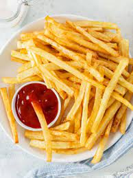

french fries recipe

french fries recipe
french fries chips is originated from france or belgium. they are prepared by cutting potatoes into even strips, drying them and frying them in a deep fryer
ingredients
- potatoes
- vegetable oil
- seasoning
steps to follow when making french fries
- slice the potatoes about half inch thick
- soak the in water for at least one hour
- rinse them twice with cold water and pat to dry
- set your deep fryer to about 300 degrees celsius
- fry in batch till golden brown
- place them in towel and sprinkle immediately with salt
- serve with ketchup